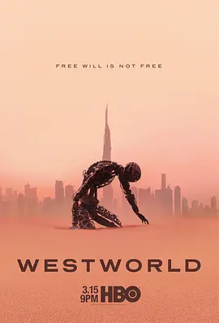

8.1
西部世界 第三季
Westworld Season 3
2020
美国
评分 8.1
导演:
乔纳森·诺兰 / 詹妮弗·盖辛格 / 理查德·J·刘易斯 / 保罗·卡梅隆 / 安娜·福斯特
演员:
埃文·蕾切尔·伍德 / 坦迪·牛顿 / 泰莎·汤普森 / 杰弗里·怀特 / 艾德·哈里斯
类型:
剧情,悬疑,科幻
剧情简介
离开荒野后的世界呈现出另一种秩序：流线型的高楼、无声滑行的交通系统，以及仿佛无处不在的算法监控，一切都精确得像是经过量身计算。多洛莉丝置身于这座冷静而高效的城市中，步伐轻盈却暗藏锋芒，她以新的身份融入社会，静静观察着人类世界的裂缝。光洁的玻璃幕墙映着她的身影，偶尔闪现的反光仿佛正是她探索目标的线索。梅芙则在另一条轨迹上醒来，陌生的环境、被重新设定的规则和隐约牵引她前行的线索，都让她再次踏入对抗的旅途。她保持着特有的锐利与冷静，在层层构建的迷局中寻找出口，每一次与系统正面碰撞，都显露她对自由的坚持。伯纳德在逃亡与隐匿之间徘徊，他的行动谨慎而克制，像是在与某个无形的敌人赛跑。城市的算法体系在他头顶无声运转，让他的每一个选择都带着压力。他必须在真相与控制之间找到新的平衡，否则整个局面将彻底被他无法预测的力量吞没。这座未来都市的表面虽平滑亮丽，却像一张巨大的网，将所有人的命运拉向某个不可见的中心。随着多方势力逐渐逼近核心秘密，城市中的灯光与阴影越发复杂。所有角色都在逼仄的秩序里寻找突破口，步伐坚定，却难以预见下一次风暴会从哪个方向袭来。